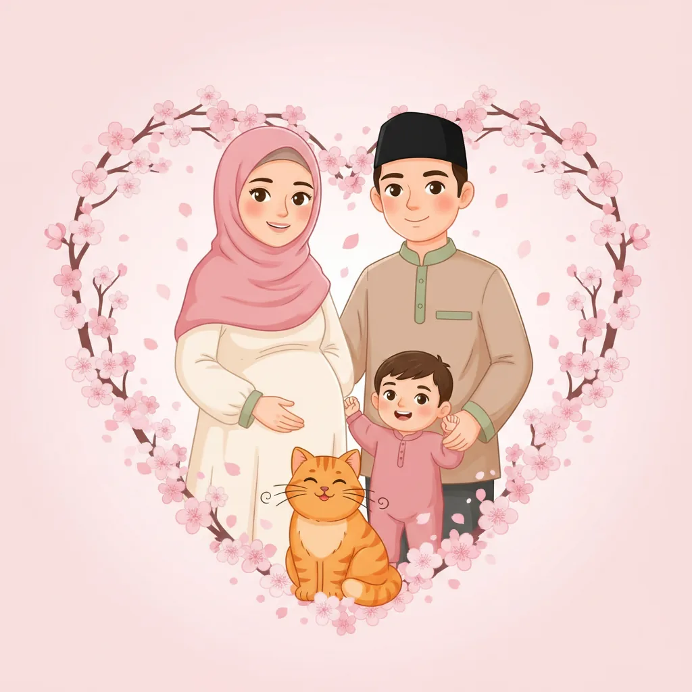

Semua modul
Indeks dalil
Seluruh kartu sumber yang dipakai kurikulum — Al-Qur'an, hadis, atsar, dan kitab para ulama.

Benih
Lencana
Pengaturan
TampilanTerang · sepia · gelap untuk membaca malam
Buka semua modulLewati urutan kunci pada peta
Cetak untuk dunia nyataPoster rutinitas, kartu adab, kartu doa — A4
Mode dengarNarasi audio modul — bila berkasnya tersedia
Ekspor progresSalin kode cadangan — pindah perangkat tanpa kehilangan
Impor progresTempel kode cadangan dari perangkat lama
Pengingat harianNotifikasi lembut tiap pagi 07.00 WIB
Unduh edisi offlineSatu berkas lengkap untuk dibuka tanpa internet
Unduh
Mulai ulang perjalananHapus XP, progres, dan lencana
TARBIYAH · Edisi cherry blossom — setiap klaim disertai sumber pada titiknya; perbedaan pendapat ditandai apa adanya.
Privasi: seluruh progres tersimpan di perangkatmu — tanpa akun, tanpa iklan, tanpa pelacak. ·